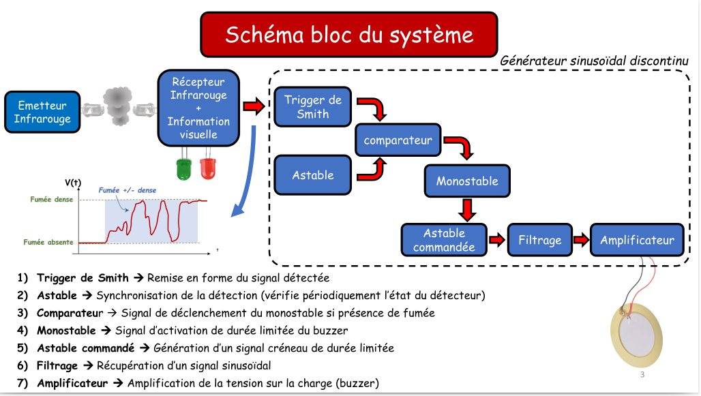
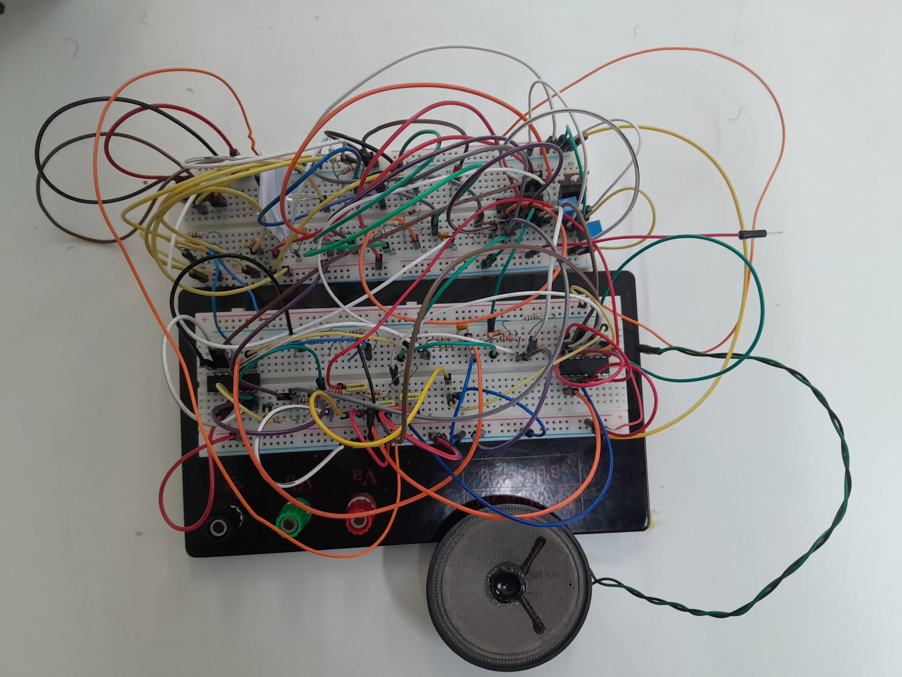

Conception, simulation et réalisation d'une chaîne d'instrumentation 100 % analogique : de la barrière infrarouge à la génération d'une onde sonore pure.
Le filtre d'ordre 3 transforme le signal carré de l'astable (rouge) en sinusoïde quasi pure (vert) en atténuant ses harmoniques.
Développé dans le cadre du module SE3 (Projet Électronique), ce système d'alarme repose sur une barrière optique infrarouge. Le défi consistait à traiter un signal analogique fluctuant et bruité pour déclencher une sirène cadencée de manière totalement autonome et matérielle.
Chaque étage a été modélisé mathématiquement, simulé sous LTspice, puis validé à l'oscilloscope. Ce projet m'a appris à gérer les imperfections réelles des composants (tolérance des condensateurs, tension de déchet des AOP) face aux modèles théoriques.


KERNEL PANIC — Hard Fault Exception
------------------------------------------
R0 = 0x00000000 R1 = 0x2000A3F0
R2 = 0x00000001 R3 = 0x08003A10
R12 = 0xDEADBEEF LR = 0x08002F1C
PC = 0x08003A4C xPSR= 0x21000000
CFSR = 0x00008200 HFSR = 0x40000000
>>> Stack overflow detected in task 'main_loop'
>>> System halted.